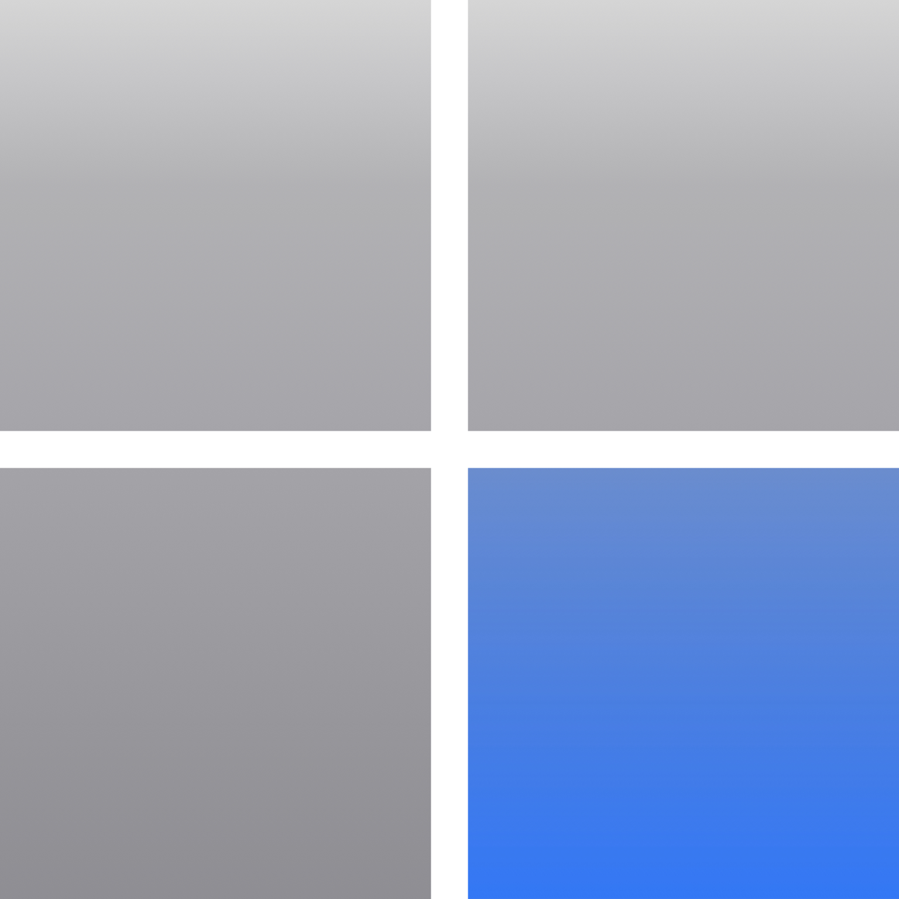

Calculator
ソフトウェア技術者のためのベストオブ電卓です。
（準備中）
説明を隠す
Calcurator は、プログラマーやシステムエンジニア（SE）などのソフトウェア技術者のために開発された計算機です。 ソフトウェアで扱うあらゆるデータはバイナリ形式（0 と 1 の 2 進数）として構成されます。 この計算機は、ソフトウェアで扱う代表的なデータである「数値」「時間」「IP アドレス」「文字列」を計算し、データを 2/10/16 進数で表示します。
- 64bit 電卓
- UNIX 時間の変換
- UTF-8 文字列の変換
- IP アドレスの計算


Apple、Appleのロゴは、米国およびその他の国で登録されたApple Inc.の商標です。